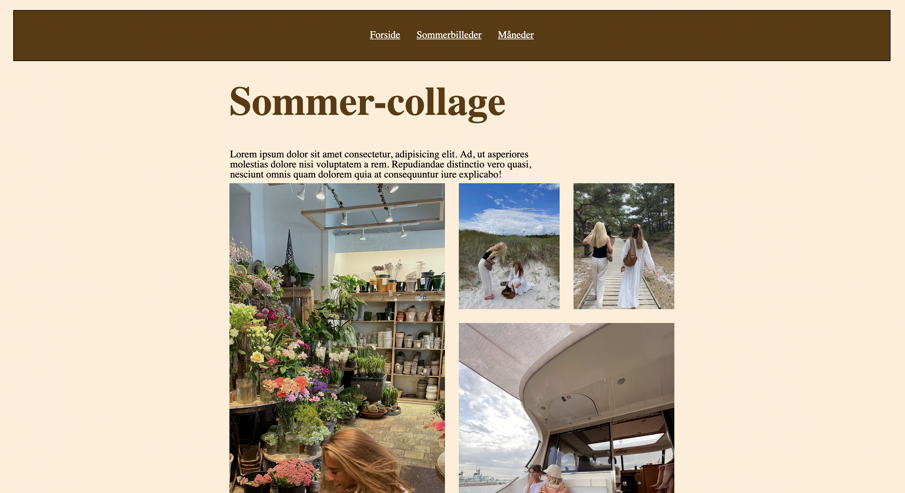
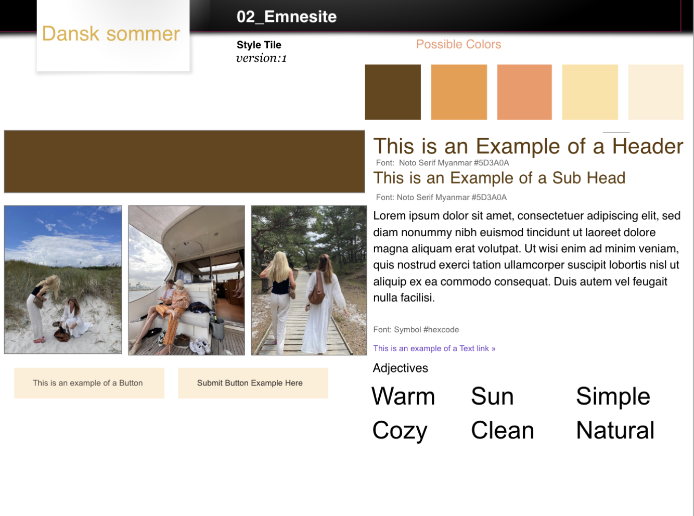
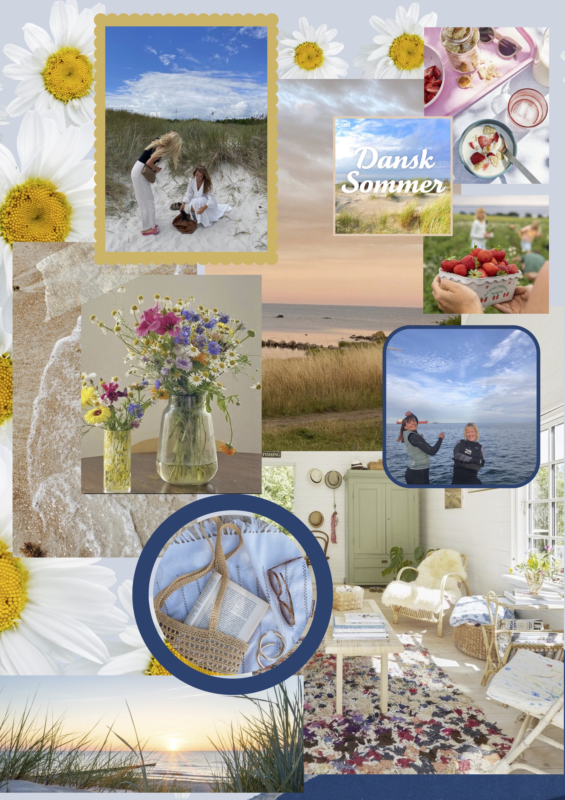

Portfolio - Nicoline Wedel
Tema 2 Grundlæggende Web
Mit website:
Mit styletile:
Mit moodboard:
Introduktion:
I mit første forløb på multimediedesign, blev jeg præsenteret til grundlæggende faglige begreber. Herunder design af digitale brugergrænseflader, digital kommunikation, indholdsproduktion og et responsivt website.
For at demonstrere de designprincipper, metoder og redskaber fra vores første tema, som jeg syntes var mest spændende, har jeg lavet nogle forskellige punkter herunder med billeder samt forklaring til.
Grundlæggende viden om designprincipper og processer for layout i medieproduktion:
For at kunne opbygge et flot og godt designsite, blev vi introduceret til 6 vigtige redskaber, som var skitsering, idegenerering, wireframe, moodboard, styletile og mock-up. De 6 forskellige redskaber hjælper en rigtig meget med at
finde frem til en start og giver en et billede og en ide af, hvordan ens følgende projekt kan komme til at se ud.
Man kan ude til venstre se mit styletile og moodboard. Dette er mit første stiletyle og moodboard, hvor jeg valgte at bruge stilarten ”Minimalisme”. Jeg prøvede kræfter af med forskellige webfonte, billeder og farver.
Jeg vil senere komme ind på designprocessen og dens opstart, så man kan se hvordan min udvikling igennem forløbene har været.
Grundlæggende viden om HTML og CSS:
Vi bliver introduceret til HTML og CSS, som er de to teknologier, der er nødvendige for at opbygge og vedligeholde hjemmesider og webapplikationer.
HTML (HyperText Markup Language) - HTML bruges til at strukturere indholdet på en hjemmeside, f.eks. tekst, billeder, videoer osv. HTML består af tags, der angiver, hvad slags indhold en bestemt sektion af siden indeholder.
CSS (Cascading Style Sheets) - CSS bruges til at style indholdet på en hjemmeside, f.eks. farver, skrifttyper, layout osv. CSS består af regler, der angiver, hvordan indholdet skal se ud og opføre sig. De to teknologier, er de mest
grundlæggende og udbredte sammen med Javascript, som jeg også vil komme ind på i de senere forløb.
Jeg valgte mit breakpoint (max-width) med en pixel på 600, da det på min computer fungerede godt, når jeg gik fra desktop til mobil i layoutet. Det ligger primært mellem 600 og 900 pixels, for at alle devices sidder, som de skal og er
100% skarpe på de forskellige mobiler, laptops og pc’er.
Jeg specificerer fx at mit grid-element ”.billede_1”, (som man kan se nedenfor) skal strække sig over to kolonner i det grid, der er defineret. Både langs column og i row. Kan også skrives som grid-column: 1 / 3; og grid-row; 1 / 3;
Man kan nedenfor se på mit billede af koden samt billedet af min hjemmeside, der er gjort responsivt til både desktop og mobile-site.